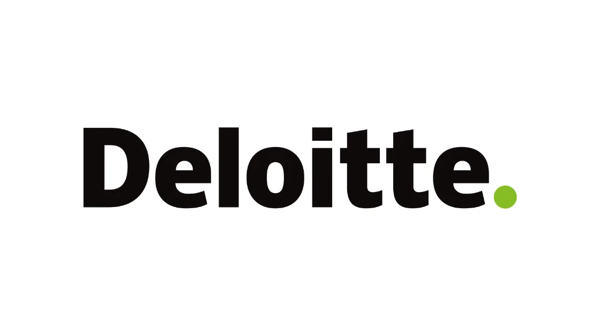

Deloitte hiring freshers for Technical Support | Latest Job Update
Deloitte hiring freshers for Technical Support | Latest Job Update | Apply Now!
Deloitte has announced a job notification for the post of Technical Support- Associate Analyst. A student from any stream can apply for Deloitte Recruitment 2022. Interested and eligible candidates can read more details below.

| Microsoft Recruitment 2022 | |||
|---|---|---|---|
| 1 | Company name | Deloitte | |
| 2 | Post Name | Technical Support | |
| 3 | Salary | 3.6 LPA | |
| 4 | Experience | Freshers | |
| 5 | Job Location | Hyderabad | |
| 6 | Batch | 2022/21/20/19/18 | |
Job Description:
Deloitte is hiring candidates for the post of Technical Support- Associate Analyst.
Job Responsibilities:
▪︎ To assist Deloitte employees with technical problems over the phone in a timely manner so that they can perform their job and be productive for the firm.
▪︎ Excellent knowledge of Microsoft Technologies such Outlook 2016, Office 365 and Office 2016, working and troubleshooting experience of Hybrid Environment of On Prem and Exchange Online.
▪︎ Knowledge on Active Directory such password reset, Account management, Mailbox and DL management.
▪︎ Good to have experience in working on MS Teams, One Note and One Drive for Business, knowledge of Windows Azure functionality for Mobile Device Management will be added advantage
▪︎ Should have Knowledge on Microsoft Skype for Business technologies to setup Skype meeting Ad-hoc or planned.
▪︎ Exceptional knowledge of performance optimization of Windows laptops, including reconfiguration, maintenance and/or upgrades
Eligibility Criteria:
▪︎ Any Graduate from any stream
Preferred skill:
▪︎ Excellent written, verbal, listening, analytical skills.
▪︎ Easily grasp and communicate complex ideas.
▪︎ Excellent problem-solving skills.
▪︎ Knowledge of MS Office 2010, 2013 including Outlook.
▪︎ Knowledge of computer hardware and software.
▪︎ Knowledge of Operating Systems like Windows 10 and MacOS.
▪︎ Knowledge of networks and the internet.
About Deloitte:
Deloitte Touche Tohmatsu Limited, commonly referred to as Deloitte, is a multinational professional services network with offices in over 150 countries and territories around the world.
How to Apply for Deloitte Recruitment 2022?
▪︎ Interested and Eligible candidates can apply for this drive online by scrolling down and clicking on Apply HERE.